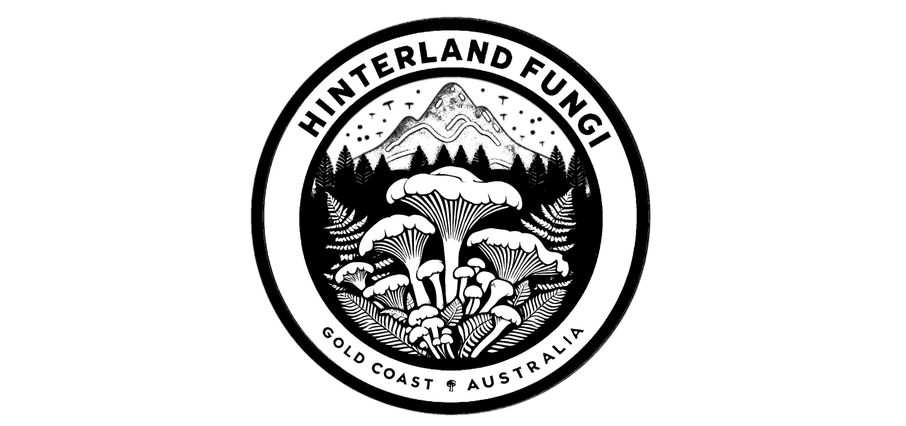

Document a fungus observation step-by-step.
Begin
Confirm
Are you sure?
Cancel
Start Again
Foray Log
Close
Export All (Copy)
Clear Log
Loading…
Skip
Additional notes
Copy to Clipboard and Open iNaturalist
Generate List Description
Generate Written Description
Save to Foray Log
View Foray Log
Start Again
Previous
Next
© 2026 Hinterland Fungi. All rights reserved.
Back to main page